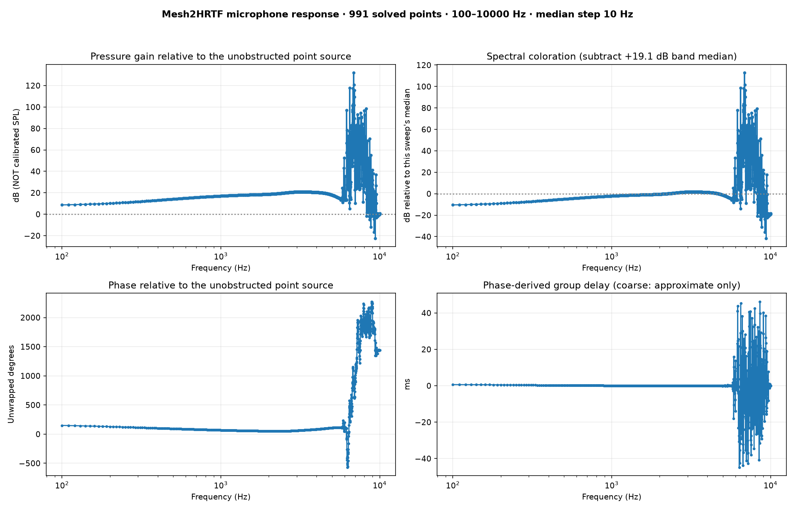
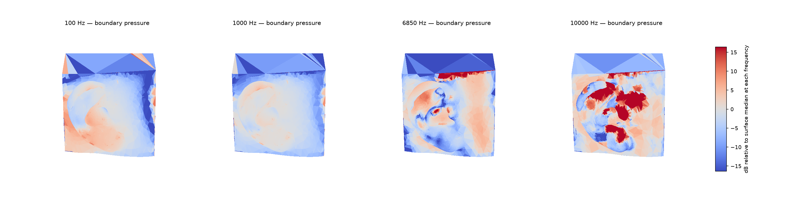
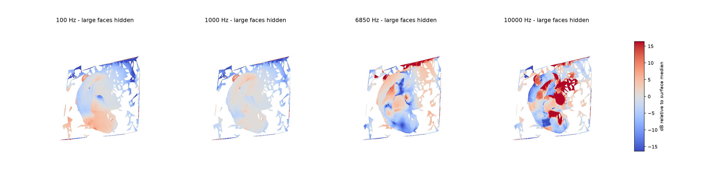

Saved simulation: ear_20261110_173540_665680. All values below
come from the original NumCalc run; reanalysis did not solve another frequency.
Upper-left: simulated mic pressure divided by the analytical unoccluded point-source pressure. Upper-right: exactly the same values with the band median subtracted to reveal the frequency dependence; it is not an EQ target. Lower panels: phase and group delay, reliable only at adequate spacing.

These are sampled values, not accurately resolved resonance frequencies. A narrow resonance between sampled tones will not appear here.
| Type | Hz | Gain vs free field (dB) | Relative to this sweep's median (dB) |
|---|---|---|---|
| sampled local high | 6850 | +132.08 | +112.95 |
| sampled local high | 6870 | +120.59 | +101.46 |
| sampled local high | 6470 | +117.83 | +98.71 |
| sampled local high | 6780 | +117.24 | +98.11 |
| sampled local high | 6940 | +115.60 | +96.47 |
| sampled local high | 6920 | +109.35 | +90.22 |
| sampled local low | 9380 | -22.51 | -41.64 |
| sampled local low | 9210 | -16.84 | -35.96 |
| sampled local low | 8790 | -11.95 | -31.08 |
| sampled local low | 8640 | -5.00 | -24.12 |
| sampled local low | 9180 | -4.54 | -23.67 |
| sampled local low | 9500 | -3.12 | -22.25 |
This is boundary pressure on the mesh, NOT an interior cross-section. Each frequency is color-normalized to its own surface median. Inspect exported VTK in ParaView for a rotatable 3D field.

Display-only removal of oversized flat faces, seen from +Y/+X:

ROTATABLE 3D VIEWER: face hiding, X/Y cuts, all camera angles | Surface pressure hotspots CSV. Cutaways only hide rendered faces: they do NOT solve a pressure field inside the air cavity.
Frequency table (CSV) · Full numeric summary (JSON) · Saved complex microphone pressure (NPZ) · Original SOFA data
Sources: NumCalc / Mesh2HRTF model output. No measured recording was used, no mic loading or distortion was solved.